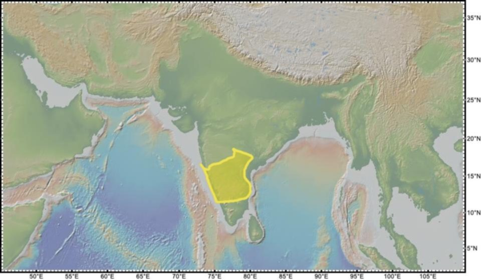

The Dharwar greenstones
Belts of altered lavas and sediments folded into the gneiss country – the remains of Archaean sea floors, and the source of the craton’s iron, manganese and gold.

Running north-north-west through the gneiss country are long, narrow belts of darker rock: altered basalts, cherts, banded iron formations and greywackes, squeezed and steepened between the grey gneisses like folders in a press. These are the Dharwar greenstone belts, named from the town of Dharwad, and they are the remains of Archaean basins and sea floors – volcanic and sedimentary piles laid down between roughly 2,900 and 2,600 million years ago and then caught in the collisions that welded the craton. Their sequences were first classified by Robert Bruce Foote of the Geological Survey of India, who named the Dharwar System in the Survey’s Records in 1888 after the district he had spent years mapping; the work was carried on by the Mysore Geological Department, which Foote came out of retirement to found and direct in 1894, and ‘Dharwar’ became a term used across Indian geology.
The belts matter to history because ore concentrates in them. The banded iron formations of Sandur, beside the ground where the ashmounds and then Vijayanagara later stood, fed iron smelting from the Iron Age to the modern mines; the manganese of the same belts, the chromite, and above all the gold – the quartz reefs of the Kolar and Hutti belts – are all Dharwar inheritances. When a later entry finds furnaces or mines in the middle Deccan, the ground beneath is almost always a greenstone belt.
To a geologist the belts are also the peninsula’s earliest scenery: pillow lavas that erupted under Archaean seas, gravels from vanished islands. The Deccan’s oldest landscapes survive only in this compressed, tilted form, filed vertically in the craton – an archive turned on its edge.
In the story
The greenstones are where the plateau’s underground wealth enters the story: the gold, iron and manganese that later entries – and the Deccan timeline’s states – mine, tax and fight over were laid down here, two and a half billion years before anyone owned them.